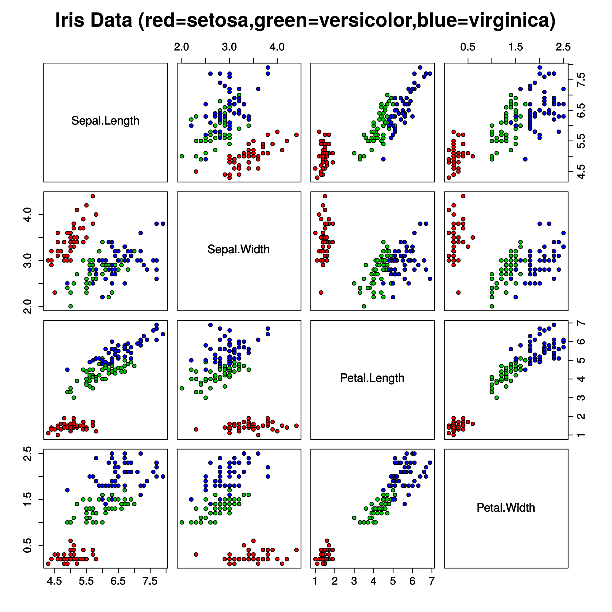

iris2.html
Ref:
https://github.com/danbikle/mljs
https://github.com/transcranial/keras-js#usage
https://www.google.com/search?q=iris+sepal+petal&tbm=isch
This form should predict the class of a flower.
You should enter 4 measurements and press the predict button.
Training Data:
